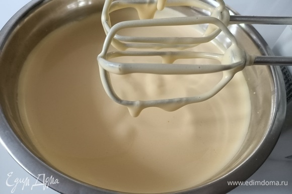
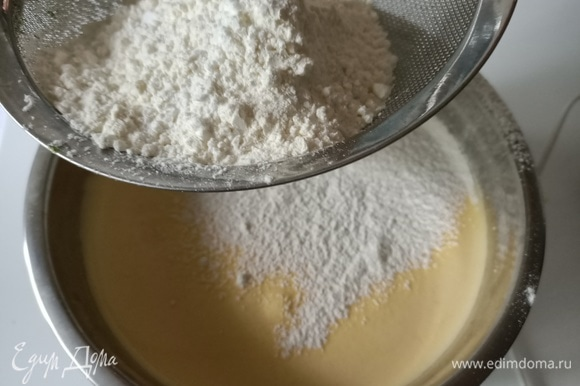
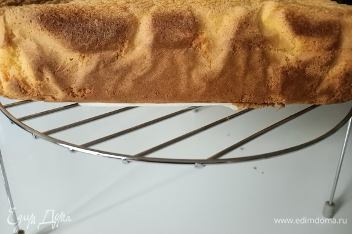
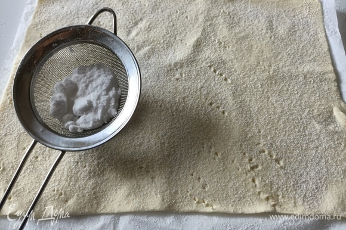
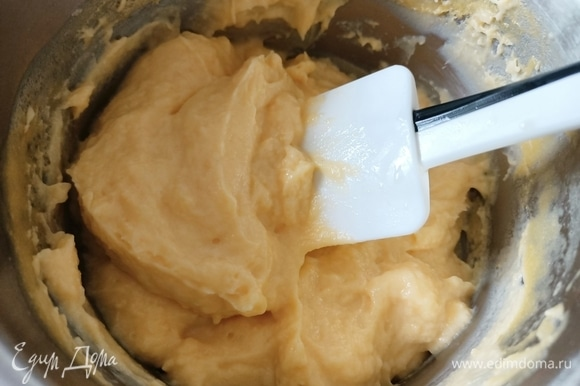
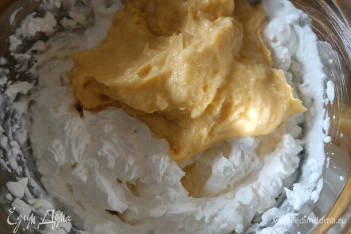
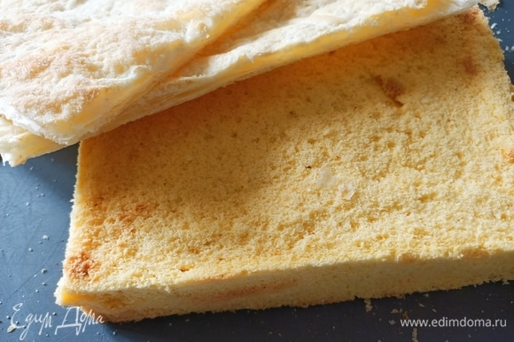
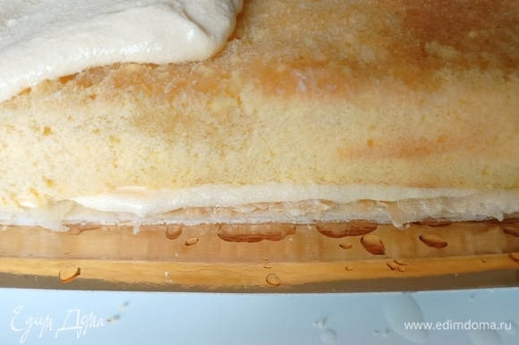
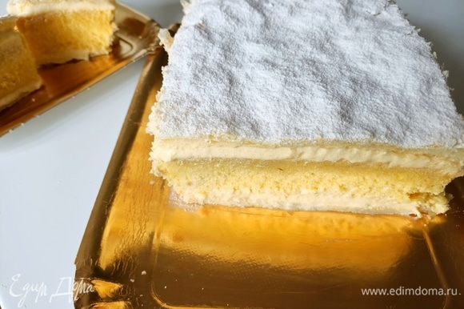

.jpg)
| Ингридиенты: | Граммы: |
| Тесто слоенное | 230 г |
| Сахар | 150 г |
| Мука | 75 г |
| Картофельный крахмал | 75 г |
| Ванилин | 1 упаковка |
| Яйцо | 5 шт |
| Молоко | 250 мл |
| Сливки кондитерские | 180 мл |
| Ром | 20 мл |
Способ приготовления:

Шаг 1. Начнем с бисквита. Яйца должны быть комнатной температуры, так они быстрее насыщаются кислородом, сохраняют форму и не расползаются при выпекании. Взбивать яйца со щепоткой соли в течение 5 минут. Затем, не переставая взбивать, постепенно ввести сахар и ванилин. Взбивать еще минут десять, до гладкой и плотной массы.

Шаг 2.Смешать картофельный крахмал с мукой, добавить к яичной массе. Аккуратно перемешать силиконовой лопаткой.

Шаг 3. Тесто переложить в форму и выпекать в разогретой до 160°C духовке на самой нижней полке в течение 40–50 минут. Готовность проверить деревянной палочкой. Сразу доставать бисквит не стоит, он должен немного остыть в духовке. Затем переложить его на решетку и полностью остудить.

Шаг 4. Слоеное тесто немного раскатать, разрезать пополам, наколоть вилкой, посыпать сахарной пудрой и выпекать в разогретой до 180°C духовке в течение 10–15 минут.

Шаг 5. Теперь приготовим крем. В молоко добавить семена ванили, вскипятить. Отдельно смешать желтки, сахар и муку. Добавить молоко, перемешать. Вернуть на плиту и варить до загустения. Накрыть пищевой пленкой. Остудить.

Шаг 6. Взбить хорошо охлажденные сливки. Когда заварной крем остынет, аккуратно соединить его со взбитыми сливками.

Шаг 7. Делаем пропитку. В воду добавить сахар и варить 5–10 минут. Снять с огня, добавить ром. Бисквит обрезать со всех сторон. Слоеные коржи подогнать под бисквит.

Шаг 8. Лучше всего собирать торт сразу на подложке (тарелке или блюде), на которой вы будете подавать торт. Первый слой — слоеный корж, затем — 1/2 крема, бисквит, пропитка, крем, слоеный корж.

Шаг 9. Верх посыпать сахарной пудрой. Хранить торт в холодильнике не более трех дней.
Шаг 10. Смешать картофельный крахмал с мукой, добавить к яичной массе. Аккуратно перемешать силиконовой лопаткой.